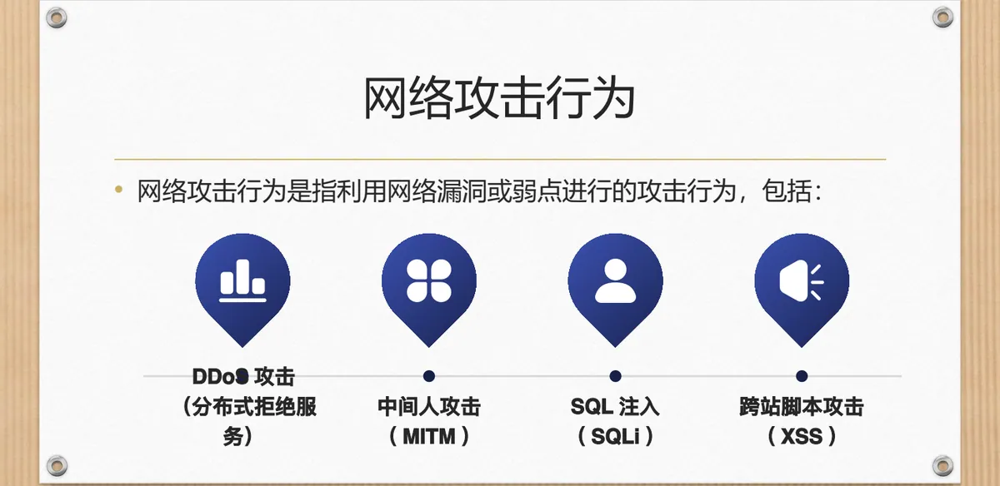
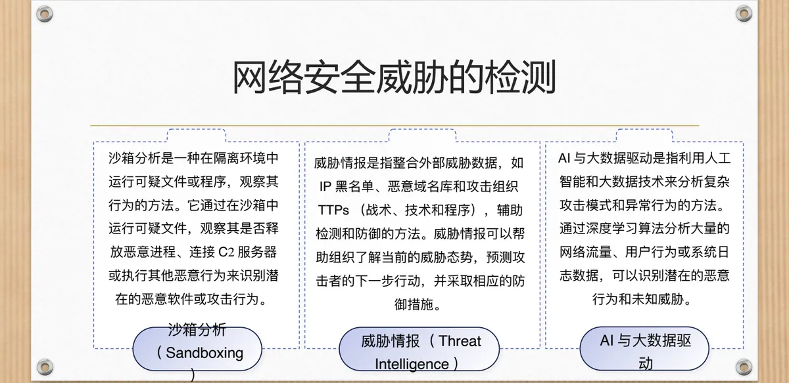
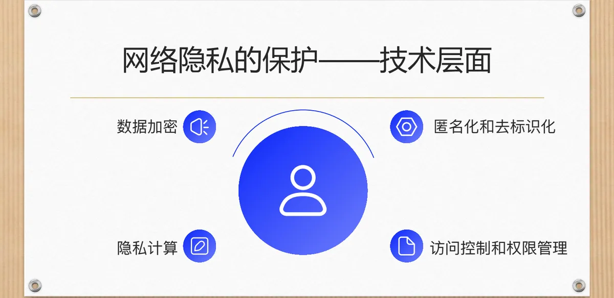
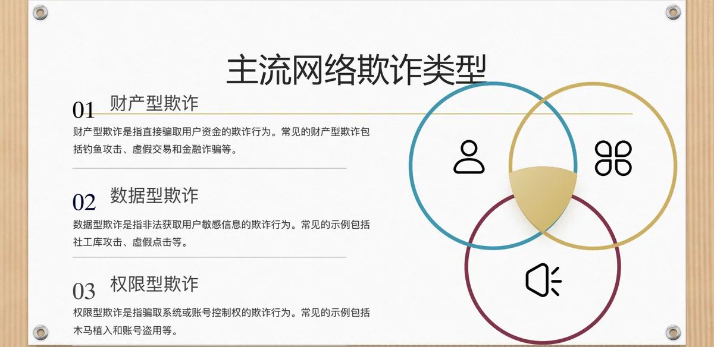
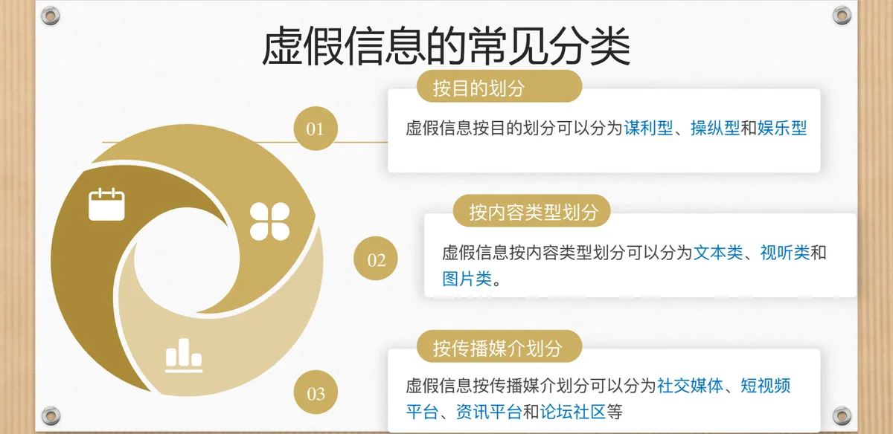

计算机通信与网络 · 第二版讲义 · 第 1 章 计算机网络概述
1.6 网络中的法律和社会问题
前面几节讲的是网络「怎么工作」，这一节换个视角：当网络成为社会基础设施，技术选择就不只是工程问题——流量能否被限速、个人信息能否被收集、视频是真是假，都会引出法律与公共政策的争论。下面逐题梳理争点与各方理由。
1. 网络中立性：谁有权给流量排序
争论的起点是市场结构：ISP（Internet Service Provider，因特网服务提供者）掌握用户接入互联网的「最后一公里」，许多地区的宽带市场又被少数几家公司垄断。这种权力失衡使它有能力干预流量、损害用户和其他企业的权益。
有了能力，也就有了动机：对视频流媒体（如 Netflix）、在线游戏等高带宽应用收取「优先传输费」，或推行「零费率」（Zero Rating），把某些社交应用的流量不计入套餐、变相为合作方引流。两者都造成「富者愈富」，小企业和新兴创新者因无力付费而被边缘化。
互联网早期的成功依赖端到端（End-to-End）原则：网络只负责传输，不干预内容与应用；若 ISP 取得流量控制权，互联网便可能变成「分层的付费花园」。于是有了网络中立性：ISP 应平等对待所有流量，不得基于内容、来源、目的地、应用类型或终端设备对特定流量歧视、限制或优先传输，具体化为三条禁令：
- 禁止屏蔽（Blocking）：不得阻止用户访问合法内容或应用；
- 禁止限速（Throttling）：不得因商业竞争等非技术原因降低特定流量的速度；
- 禁止付费优先（Paid Prioritization）：不得让付费者获得「快速通道」而挤压未付费内容。
三条禁令守护的，是互联网作为「开放平台」的属性。
2. 争议在哪里：五个层面的分歧与制度回应
政治层面争的是监管还是自由：支持者认为网络是公共资源，宽带市场常有「自然垄断」（如美国 AT&T、Comcast），ISP 可能滥用控制权屏蔽对手内容，需立法纠正「市场失灵」；反对者认为严格规则会抑制创新、抬高合规成本、削弱 ISP 投资意愿（如 5G 基站建设），是「技术家长主义」。
商业层面是 ISP 盈利需求与内容商公平竞争的博弈。ISP 面对高昂的建设成本与放缓的收入，希望以分层收费转移成本；内容商则视付费优先为「劫持流量」，认为它会挤压中小内容商，而用户已付订阅费，再加收费涉嫌「双重剥削」。
用户层面关注服务质量、选择权与隐私：限速直接损害体验（AT&T 曾限制 Netflix 速度以推广自家流媒体）；零费率带来「隐性控制」，如 Facebook 在印度与运营商合作的「Free Basics」虽降低用户成本，却可能把人锁进合作方生态、加剧「数字鸿沟」；部分 ISP 不告知流量限制，出现「秘密限速」。
技术层面最难的是界定「合理网络管理」与「歧视性行为」。网络拥塞是动态的，ISP 需用「流量整形」（Traffic Shaping）分配带宽；而降低视频速度既可能为保障语音通话质量（合理），也可能为迫使视频商付费（不合理）。自动驾驶、远程手术等「特殊服务」确需低延迟优先，却与普通流量混杂、难以严格区分。
创新与公平层面，支持中立者看重「长尾效应」：小企业能以低成本触达用户，付费优先会使其边缘化；反对者用效率逻辑反驳：4K 视频等占用大量资源，强制「一刀切」中立会让 ISP 收入不足、减少投资。
制度回应可归为六类：立法强制中立（欧盟《欧洲电子通信法规》EECC 将其写入法律并设立独立监管机构，巴西《互联网民权法案》Marco Civil 认定「流量歧视违法」，美国加州等州自颁《网络中立法案》）；禁止付费优先与细化「特殊服务」（欧盟《网络与信息系统安全指令》NIS Directive 规定除非技术必要不得区别对待，印度 2016 年指南只允许远程医疗等特殊服务有有限优先级，美国 FCC 的「三层分类法」未实施）；强制透明披露（FCC《开放互联网规则》要求公开管理政策与限速条件，加拿大等国建立「多方利益相关方委员会」，由 ISP、内容商与用户代表协商规则）；用户权益保护（巴西、印度允许投诉不合理限速并要求写明「非歧视性条款」）；独立审计与认证（德国 TÜV 审核、日本的认证制度、BEREC 的「中立性指数」报告）；分层监管与基金补贴（基础服务严格中立、高性能服务允许有限差异化，欧盟《数字市场法案》DMA 限制大型平台，芬兰设「普遍服务基金」）。
3. 网络安全威胁：定义与三个要素
网络安全威胁是指可能导致资产（数据、系统、服务）受损的潜在或现实风险源，风险源可以是恶意行为、漏洞利用或人为失误。它有三个要素：威胁源（谁发起，如黑客、网络犯罪团伙、敌对国家、脚本小子或自动化工具）、威胁路径（如何作用，如钓鱼邮件、未修补的漏洞，或经物理介质与社会工程学手段）、威胁影响（什么后果，如数据泄露、系统崩溃、服务中断、经济损失）。
威胁与漏洞（Vulnerability）：漏洞是系统或软件中的缺陷，是潜在的攻击点；威胁是利用漏洞发起的攻击行为。威胁与风险（Risk）：风险是漏洞被利用后导致的损失概率与影响程度，威胁是风险的原因，风险是威胁的后果。
4. 主流网络安全威胁的类型
主流威胁分四类。恶意软件（Malware）具有自我复制、隐蔽传播、远程控制与加密勒索等特点，常见类型有病毒（Virus）、蠕虫（Worm）、木马（Trojan）、勒索软件（Ransomware）和间谍软件（Spyware）。网络攻击行为利用网络漏洞或弱点实施攻击，典型形式有 DDoS 攻击（分布式拒绝服务）、中间人攻击（MITM）、SQL 注入（SQLi）和跨站脚本攻击（XSS）。
数据安全威胁针对数据的安全性与完整性，包括数据泄露（Data Breach）、数据篡改（Data Tampering）和数据勒索（Data Ransom）。社会工程学攻击绕过技术防线，利用人性弱点（信任、好奇、恐惧）诱导受害者泄露信息或执行操作，常见形式为钓鱼邮件（Phishing Email）、电话诈骗（Vishing）和伪装攻击（Impersonation）。

5. 威胁的检测与防御
检测有两条主线。特征检测（Signature-based Detection）基于已知威胁的特征库做匹配，通过分析文件、流量或系统行为中的特征识别已知攻击模式，需定期更新特征库；异常检测（Anomaly Detection）先建立「正常行为基线」，再识别偏离基线的活动，能发现未知威胁，但可能误报。
补强手段有三类：威胁情报（Threat Intelligence）整合 IP 黑名单、恶意域名库与攻击组织 TTPs（战术、技术和程序）；沙箱分析（Sandboxing）在隔离环境中运行可疑文件，观察其是否释放恶意进程、连接 C2 服务器；AI 与大数据驱动用深度学习分析海量流量与日志，识别未知威胁。

检测技术有三个演进方向：云原生检测依托云端流量镜像与日志分析处理大规模流量；终端检测与响应 EDR（Endpoint Detection and Response）在终端部署代理，监控进程、文件与网络行为；持续改进要求规则、算法与特征库随攻击手法更新。
防御策略分三层：基础防御措施（边界防护、数据保护、补丁管理）、针对性防御方案（分别应对恶意软件、DDoS 攻击、社会工程学攻击和 APT，即 Advanced Persistent Threat，高级持续性威胁）、应急响应与恢复（设计响应流程、制定备份策略、及时修复漏洞）。
6. 网络隐私保护
（1）定义、对象与核心原则
网络隐私保护是指通过技术、管理或法律手段，防止个人或组织的网络行为数据与敏感信息被非授权收集、使用、泄露或篡改。关键对象有三类：个人信息（姓名、手机号、地址）、行为数据（浏览记录、位置轨迹）和敏感信息（身份证号、金融账户）。它的核心原则有三条。
最小必要：只收集必需的数据；知情同意：事先取得明确授权；目的限制：不得挪作未声明的商业用途。
（2）两组易混概念与典型泄露场景
隐私与安全的分工不同：隐私关注「数据是否被过度收集或滥用」，安全关注「数据是否被非法获取或破坏」。个人信息是与个人相关的任何信息，个人敏感信息则是一旦泄露可能危及人身、财产安全的信息，如生物识别信息、宗教信仰。
泄露有四类场景：过度收集（APP 强制索取非必要权限）、数据滥用（用于未声明的商业用途）、技术漏洞（数据库未加密导致拖库）、黑产攻击（窃取后在暗网贩卖）。个人面临身份盗窃与精准诈骗，企业面临信任流失、法律处罚与商业机密泄露，社会层面还可能危及公共安全。
（3）法律、技术、管理与个人四个层面的保护
法律层面，国外有欧盟《通用数据保护条例》（GDPR）、《加州消费者隐私法案》（CCPA）与加拿大《个人信息保护和电子文档法案》（PIPEDA），要求企业履行「告知—同意」义务，用户享有「删除权」与「更正权」；国内有《个人信息保护法》《网络安全法》《数据安全法》。
技术层面有四类手段：数据加密（传输用 TLS/SSL，存储用 AES、RSA 等算法）、匿名化和去标识化（k-匿名、差分隐私）、隐私计算（联邦学习、安全多方计算）、访问控制和权限管理（最小权限原则、零信任模型）。

管理层面靠隐私政策、数据生命周期管理、第三方隐私审计与员工责任追溯；个人层面则要关闭非必要权限、用虚拟身份注册非核心服务、警惕钓鱼链接、启用强密码与多因素认证。
7. 网络中的欺诈行为
网络欺诈是指利用网络技术进行的非法占有行为，目的在于诱导或欺骗用户，使其产生错误认知并遭受财产或信息损失。其核心要素为欺诈主体、欺诈手段与欺诈目标：以网络技术为手段，攻击用户的财产、数据与权限。
按目标划分，主流网络欺诈有三类：财产型欺诈直接骗取用户资金，如钓鱼攻击、虚假交易和金融诈骗；数据型欺诈非法获取用户敏感信息，如社工库攻击和虚假点击；权限型欺诈骗取系统或账号控制权，如木马植入和账号盗用。

8. 网络虚假信息
（1）定义与三个特征
网络虚假信息是指通过网络传播的与事实不符的信息，可能误导认知、引发恐慌或操纵舆论。它的核心特征有三个。
非真实性：内容与客观事实矛盾；传播性：依赖社交网络和算法推荐等渠道扩散；目的性：可能为牟利、操纵或破坏。
（2）分类与典型传播场景
虚假信息可按三种口径分类：按目的，分谋利型（虚假广告）、操纵型（政治谣言）和娱乐型（恶搞谣言）；按内容类型，分文本类（伪造通知）、视听类（深度伪造）和图片类（PS 伪造）；按传播媒介，落在社交媒体、短视频平台、资讯平台和论坛社区等渠道上。
典型传播场景有三类：突发事件期，如灾害时「水库决堤」的假视频疯传；热点事件期，如明星离婚时「出轨细节」的谣言迅速流传；日常生活场景，如「吃某食物致癌」这类健康谣言。共性在于：权威信息尚未到位、公众情绪被调动时，虚假信息最容易占住位置。

（3）识别：技术手段与非技术线索
技术层面有两件事。来源核查：核查发布者资质、追溯信息源头，检查是否为官方账号、有无历史谣言记录，或用「谣言粉碎机」查询。内容验证：用工具对图片、视频鉴伪，检查是否拼接或篡改，并对文本做逻辑分析，关注绝对化表述、数据无出处、情感煽动等特征。辅助工具如 NewsGuard 插件、FactCheck.org，以及国内的「中国互联网联合辟谣平台」与微博举报功能。
非技术线索可归纳为四点：违背常识的「反智」信息、过度情绪化的内容、时间或地点上的矛盾，以及来自利益相关方的信息。
9. 本章回顾与后续
第 1 章至此讨论了通信与网络的概念、演化、分类与评价指标、体系结构与网络中的法律和社会问题；后续各章转入数据通信、网络服务与应用、局域网、网络互联、拥塞控制等主题。
本节小结
- 网络中立性＝ISP 平等对待所有流量，即禁止屏蔽、禁止限速与禁止付费优先；争议遍及政治、商业、用户、技术与创新五个层面，核心是互联网究竟是「公共资源」还是「商业基础设施」。
- 网络安全威胁由威胁源、威胁路径、威胁影响三要素构成，威胁是利用漏洞的实际攻击行为，风险是漏洞被利用后的损失概率与影响程度；主流威胁分恶意软件、网络攻击行为、数据安全威胁与社会工程学攻击四类，检测以特征检测与异常检测为主线，防御则从基础措施到应急响应层层设防。
- 隐私保护的对象是个人信息、行为数据与敏感信息，原则是最小必要、知情同意与目的限制；法律、技术、管理与个人四条路径需同时用力。
- 网络欺诈按目标分为财产型、数据型和权限型；网络虚假信息具有非真实性、传播性和目的性，识别既靠来源核查与内容验证，也靠反智、情绪化、时空矛盾与利益相关这四条非技术线索。